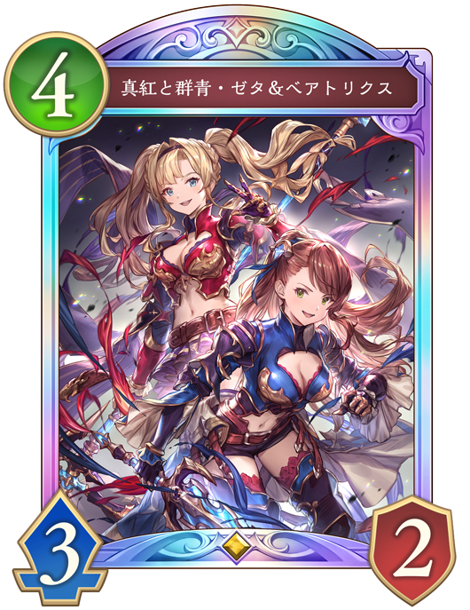
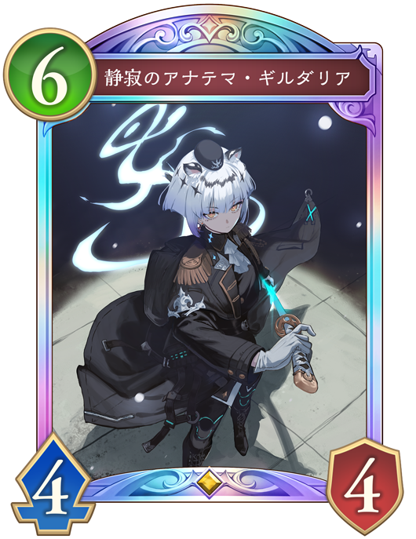

Q. 上記の予測の理由を踏まえた上で対処として良いと思うものを選びなさい

「真紅と群青・ゼタ&ベアトリクス」のエンハンスで盤面を取りながら、相手リーダーに3点与える
有効度：★
盤面にフォロワーが2体しか残らず超進化権を温存しながら「全一の王・ベルゼバブ」をプレイできてしまう。 更にリーダーに与えた3点も相手のターン開始時に「新約白の章」が破壊されて相手リーダーの体力が2回復するため、相手リーダーのダメージが実質減ってしまう。
 「麗金花・ウンケイ」で消滅させながら超進化をし、クレストを付与する。
「麗金花・ウンケイ」で消滅させながら超進化をし、クレストを付与する。
有効度：★★
プレイすることで輝く金貨がファンファーレで1枚と超進化時にクレスト付与で4回までターン終了時に手札に加わり、手札が潤沢になる。 しかし、盤面にフォロワーが2体しかいないため相手は超進化権を温存しながら「全一の王・ベルゼバブ」をプレイできてしまう。
 「卓越のルミナスメイジ」を出して進化し、盤面に5体残しながら相手のフォロワーを倒す。
「卓越のルミナスメイジ」を出して進化し、盤面に5体残しながら相手のフォロワーを倒す。
有効度：★★★★
「全一の王・ベルゼバブ」は進化込みでフォロワーを3体までしか倒せないため、4体以上盤面に並べるとフォロワーを処理できず相手はプレイしにくくなる。 守護も3体並び「運命の黄昏・オーディン」の対策にもなる。

「静寂のアナテマ・ギルダリア」を出して進化し、盤面に4体残して相手のフォロワーを倒す。
有効度：★★★
「全一の王・ベルゼバブ」は進化込みでフォロワーを3体までしか倒せないため、4体以上盤面に並べるとフォロワーを処理できず相手はプレイしにくくなる。
形対処の対処の説明(クリックすると表示されるよ)
「全一の王・ベルゼバブ」はファンファーレで2体のフォロワーに能力を消しながら9ダメージを与え、進化してもフォロワーを最大3体までしか倒せない。
最低限進化権を使わせる為にも3体以上フォロワーを並べることが有効であり、4体以上並べると除去範囲から外れて場にフォロワーが残る。
そのため,盤面にフォロワーがいるほど相手はプレイしにくく、プレイされても盤面が残り「十天衆の頭目・シエテ」の奥義で進化しながら攻めることができる。